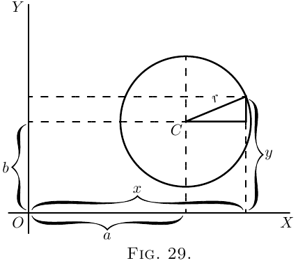

这可以变形为 \[ y = \sqrt{r^2-(x-a)^2} + b. \]
现在，只要看一眼图，我们预先就知道：当 $x=a$ 时，$y$ 要么取到极大值 $b+r$， 要么取到极小值 $b-r$。不过我们先不利用这个知识；我们通过求导并令其等于零的过程， 来找出什么 $x$ 值会使 $y$ 成为极大值或极小值。 \begin{align*} \frac{dy}{dx} &= \frac{1}{2} \frac{1}{\sqrt{r^2-(x-a)^2}} × (2a-2x), \\ \text{化简为}\; \frac{dy}{dx} &= \frac{a-x}{\sqrt{r^2-(x-a)^2}}. \end{align*}
于是 $y$ 成为极大值或极小值的条件是： \[ \frac{a-x}{\sqrt{r^2-(x-a)^2}} = 0. \]
由于没有任何 $x$ 值会使分母变成无穷大，所以使它为零的唯一条件是 \begin{align*} x &= a. \end{align*} 把这个值代入圆的原方程，得到 \begin{align*} y &= \sqrt{r^2}+b; \end{align*} 又因为 $r^2$ 的平方根可以是 $+r$ 或 $-r$，所以得到两个 $y$ 值 \begin{align*} \left\{\begin{aligned}y \\ y\end{aligned}\right. & \begin{aligned}= b & + r \\ = b & - r.\end{aligned} \end{align*}
其中第一个是顶部的极大值；第二个是底部的极小值。
如果曲线上没有任何地方是极大值或极小值，那么令其等于零的过程会给出不可能的结果。例如： \begin{align*} \text{令}\; y &= ax^3 + bx + c. \\ \text{于是}\; \frac{dy}{dx} &= 3ax^2 + b. \end{align*}
令它等于零，得到 $3ax^2 + b = 0$， \[ x^2 = \frac{-b}{3a}, \quad\text{且}\quad x = \sqrt{\frac{-b}{3a}},\;\text{这是不可能的。} \] 因此 $y$ 没有极大值，也没有极小值。
再做几个例题，就能让你彻底掌握微积分这种最有趣、最有用的应用。
(1) 在半径为 $R$ 的圆内接一个面积最大的矩形，它的边长是多少？
若其中一边叫做 $x$， \[ \text{另一边} = \sqrt{(\text{对角线})^2 - x^2}; \] 而矩形的对角线必定是圆的直径，所以另一边 $ = \sqrt{4R^2 - x^2}$。
于是，矩形面积 $S = x\sqrt{4R^2 - x^2}$， \[ \frac{dS}{dx} = x × \dfrac{d\left(\sqrt{4R^2 - x^2}\,\right)}{dx} + \sqrt{4R^2 - x^2} × \dfrac{d(x)}{dx}. \]
如果你忘了怎样对 $\sqrt{4R^2-x^2}$ 求导，这里给个提示：写成 $4R^2-x^2=w$ 和 $y=\sqrt{w}$，再求 $\dfrac{dy}{dw}$ 和 $\dfrac{dw}{dx}$； 先自己硬碰硬算出来，实在算不下去再去看这里。
你会得到 \[ \dfrac{dS}{dx} = x × -\dfrac{x}{\sqrt{4R^2 - x^2}} + \sqrt{4R^2 - x^2} = \dfrac{4R^2 - 2x^2}{\sqrt{4R^2 - x^2}}. \]
为了取得极大值或极小值，必须有 \[ \dfrac{4R^2 - 2x^2}{\sqrt{4R^2 - x^2}} = 0; \] 也就是 $4R^2 - 2x^2 = 0$，所以 $x = R\sqrt{2}$。
另一边 ${} = \sqrt{4R^2 - 2R^2} = R\sqrt{2}$；两边相等；这个图形是一个正方形， 它的边长等于以半径为边所作正方形的对角线。在这个情形中，我们处理的当然是极大值。
(2) 一个圆锥形容器的母线长为 $l$，当它的容量最大时，开口半径是多少？
若 $R$ 是半径，$H$ 是对应的高度， $H = \sqrt{l^2 - R^2}$. \[ \text{体积 } V = \pi R^2 × \dfrac{H}{3} = \pi R^2 × \dfrac{\sqrt{l^2 - R^2}}{3}. \]
按前一题同样处理，得到 \begin{align*} \dfrac{dV}{dR} &= \pi R^2 × -\dfrac{R}{3\sqrt{l^2 - R^2}} + \dfrac{2\pi R}{3} \sqrt{l^2 - R^2} \\ &= \dfrac{2\pi R(l^2 - R^2) - \pi R^3}{3\sqrt{l^2 - R^2}} = 0 \end{align*} 这是极大值或极小值的条件。
也就是 $2\pi R(l^2 - R^2) - \pi R^2 = 0$，并且 $R = l\sqrt{\tfrac{2}{3}}$； 显然这是极大值。
(3) 求函数的极大值和极小值： \[ y = \dfrac{x}{4-x} + \dfrac{4-x}{x}. \]
我们得到 \[ \dfrac{dy}{dx} = \dfrac{(4-x)-(-x)}{(4-x)^2} + \dfrac{-x - (4-x)}{x^2} = 0 \] 作为极大值或极小值的条件；也就是 \[ \dfrac{4}{(4-x)^2} - \dfrac{4}{x^2} = 0 \quad\text{且}\quad x = 2. \]
只有一个值，因此只有一个极大值或极小值。 \begin{align*} \text{当}\quad x &= 2,\phantom{.5}\quad y = 2, \\ \text{当}\quad x &= 1.5,\quad y = 2.27, \\ \text{当}\quad x &= 2.5,\quad y = 2.27; \end{align*} 所以它是极小值。（画出这个函数的图像会很有启发。）
(4) 求函数 $y = \sqrt{1+x} + \sqrt{1-x}$ 的极大值和极小值。 （你会发现画出图像很有启发。）
求导立即得到（见这里的例 1） \[ \dfrac{dy}{dx} = \dfrac{1}{2\sqrt{1+x}} - \dfrac{1}{2\sqrt{1-x}} = 0 \] 作为极大值或极小值的条件。
因此 $\sqrt{1+x} = \sqrt{1-x}$，且 $x = 0$，这是唯一解。
当 $x=0$ 时，$y=2$。
当 $x=±0.5$ 时，$y= 1.932$，所以这是极大值。
(5) 求函数的极大值和极小值： \[ y = \dfrac{x^2-5}{2x-4}. \]
我们有 \[ \dfrac{dy}{dx} = \dfrac{(2x-4) × 2x - (x^2-5)2}{(2x-4)^2} = 0 \] 作为极大值或极小值的条件；也就是 \[ \dfrac{2x^2 - 8x + 10}{(2x - 4)^2} = 0; \] 或 $x^2 - 4x + 5 = 0$；其解为 \[ x = \tfrac{5}{2} ± \sqrt{-1}. \]
这些是虚数，所以不存在实数 $x$ 使 $\dfrac{dy}{dx} = 0$； 因此既没有极大值，也没有极小值。
(6) 求函数的极大值和极小值： \[ (y-x^2)^2 = x^5. \]
这可以写成 $y = x^2 ± x^{\frac{5}{2}}$。 \[ \dfrac{dy}{dx} = 2x ± \tfrac{5}{2} x^{\frac{3}{2}} = 0 \quad\text{作为极大值或极小值的条件}; \] 也就是 $x(2 ± \tfrac{5}{2} x^{\frac{1}{2}}) = 0$，它在 $x = 0$ 时成立； 也在 $2 ± \tfrac{5}{2} x^{\frac{1}{2}} = 0$ 时成立，即 $x=\tfrac{16}{25}$。 所以有两个解。
先取 $x = 0$。如果 $x = -0.5$，则 $y = 0.25 ± \sqrt[2]{-(.5)^5}$； 如果 $x = +0.5$，则 $y = 0.25 ± \sqrt[2]{(.5)^5}$。在一侧 $y$ 是虚数； 也就是说，没有可以由图像表示的 $y$ 值；因此这条曲线完全在 $y$ 轴右侧 （见 图 30）。

下一章 →
主页 ↑